74 equations — 74 machine-verified, 0 flagged. Green = verified, amber = flagged (still shows best LaTeX + source crop).
| # | ID | Status | Rendered (KaTeX) | Source crop (PDF) |
|---|---|---|---|---|
| 1 | II-7-1 | agreed | $$K_e' = \left[ \frac{1}{M_o} \int_0^\infty \int_{\theta_{\text{min}}}^{\theta_{\text{max}}} S(f,\theta) (K')^2 \, d\theta \, df \right]^{\frac{1}{2}}$$ | 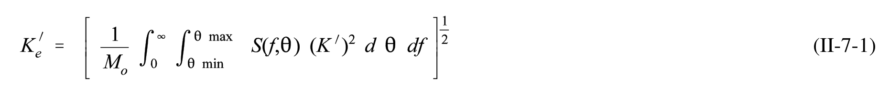 |
| 2 | II-7-2 | agreed | $$C_t = C\left(1 - \frac{F}{R}\right)$$ | 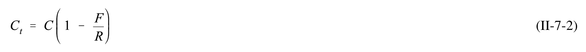 |
| 3 | II-7-3 | agreed | $$C = 0 . 5 1 \, - \, \frac { 0 . 1 1 B } { h }$$ | 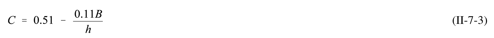 |
| 4 | II-7-4 | agreed | $$C_t = \sqrt{C_{tt}^2 + C_{t0}^2}$$ | 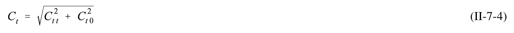 |
| 5 | II-7-5 | agreed | $$C_{t} = \left[ \frac{\frac{2k(d-y)}{\sinh 2kd} + \frac{\sinh 2k(d-y)}{\sinh 2kd}}{1 + \frac{2kd}{\sinh 2kd}} \right]^{\frac{1}{2}}$$ | 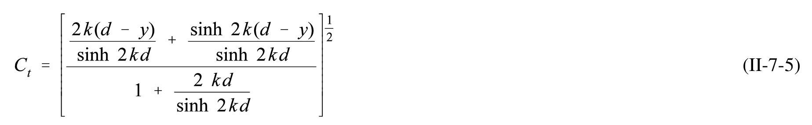 |
| 6 | II-7-6 | single_verified | $$I_r = \frac{\tan\alpha}{\sqrt{\frac{H_i}{L_o}}}$$ | 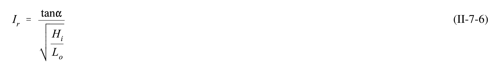 |
| 7 | II-7-7 | agreed | $$N = H _ { i } \cos { \frac { 2 \pi x } { L } } \cos { \frac { 2 \pi t } { T } }$$ | 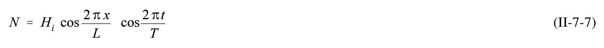 |
| 8 | II-7-8 | agreed | $$C_r = \frac{aI_r^2}{b + I_r^2}$$ | 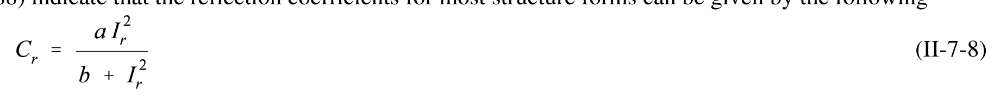 |
| 9 | II-7-9 | agreed | $$I _ { r } = { \frac { \tan 2 9 . 7 ^ { o } } { \sqrt { 1 . 7 0 / 5 6 . 2 } } } = 3 . 2 8$$ | 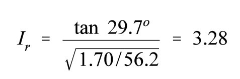 |
| 10 | II-7-10 | agreed | $$C _ { r } \ = \ { \frac { 0 . 6 ( 3 . 2 8 ) ^ { 2 } } { 6 . 6 \ + \ ( 3 . 2 8 ) ^ { 2 } } } \ = \ 0 . 3 7$$ | 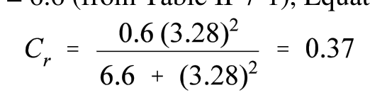 |
| 11 | II-7-9 | agreed | $$T _ { n } \ = \ { \frac { 2 \ l _ { B } } { n \ { \sqrt { g d } } } }$$ | 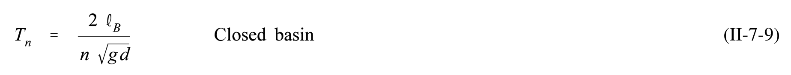 |
| 12 | II-7-10 | agreed | $$T _ { 1 } \quad = \quad \frac { 2 \ l _ { B } } { \sqrt { g d } }$$ | 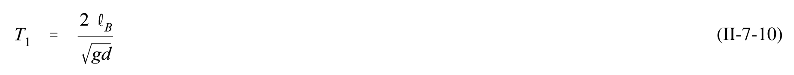 |
| 13 | II-7-11 | agreed | $$T_{n,m} = \frac{2}{\sqrt{gd}} \left[ \left( \frac{n}{\ell_1} \right)^2 + \left( \frac{m}{\ell_2} \right)^2 \right]^{\left( -\frac{1}{2} \right)}$$ | 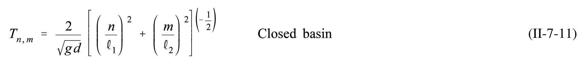 |
| 14 | II-7-12 | agreed | $$T_n = \frac{4 \ell_B}{(1 + 2n) \sqrt{gd}} \qquad \text{Open basin}$$ | 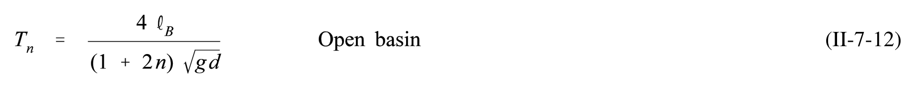 |
| 15 | II-7-13 | agreed | $$T _ { 0 } \, = \, { \frac { 4 \, \ell _ { B } } { \sqrt { g d } } }$$ | 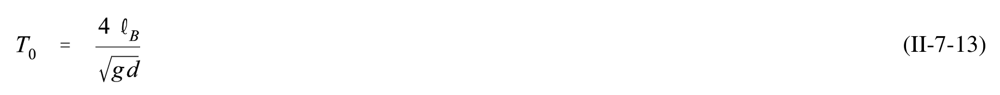 |
| 16 | II-7-14 | single_verified | $$V _ { \mathrm { m a x } } \ = \ { \frac { H } { 2 } } \ { \sqrt { \frac { g } { d } } }$$ | 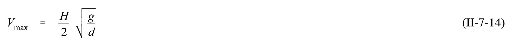 |
| 17 | II-7-15 | agreed | $$X = \frac{H T_n}{2\pi} \sqrt{\frac{g}{d}}$$ | 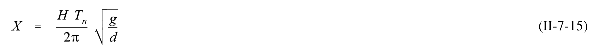 |
| 18 | II-7-16 | agreed | $$\overline{V} = \frac{HL}{\pi d T_n}$$ | 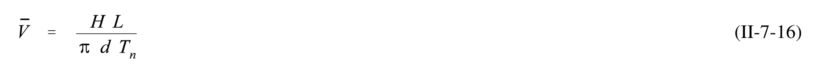 |
| 19 | II-7-17 | agreed | $$T = \left(\frac{2\pi \ell}{\sqrt{gd}}\right) \left(\frac{1}{k\ell}\right)$$ | 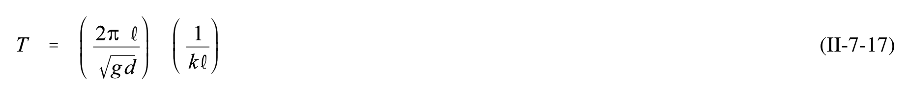 |
| 20 | II-7-18 | agreed | $$T_H = 2\pi \sqrt{\frac{(\ell_c + \ell'_c) A_b}{g A_c}}$$ | 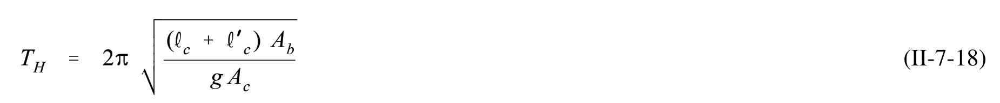 |
| 21 | II-7-19 | agreed | $$\ell'_c = \frac{-W}{\pi} \ln \left( \frac{\pi W}{\sqrt{g d_c} T_H} \right)$$ | 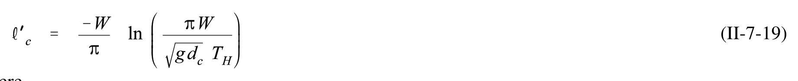 |
| 22 | II-7-20 | agreed | $$E = 1 - \left(\frac{C_i}{C_o}\right)^{\frac{1}{i}}$$ | 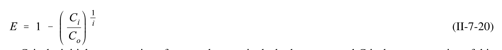 |
| 23 | II-7-21 | agreed | $$C = V _ { s } \cos \theta$$ | 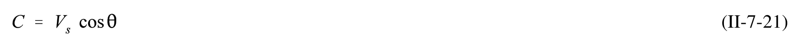 |
| 24 | II-7-22 | agreed | $$F = \frac{V_s}{\sqrt{gd}}$$ | 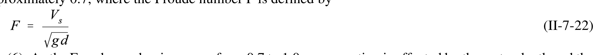 |
| 25 | II-7-23 | agreed | $$\theta = 35.27 (1 - e^{12(F-1)})$$ | 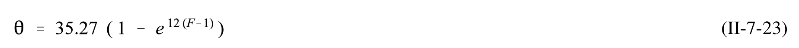 |
| 26 | II-7-26 | agreed | $$F = \frac{5.157}{\sqrt{9.81 (5)}} = 0.73$$ | 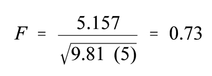 |
| 27 | II-7-27 | agreed | $$\theta = 35.27 \left[1 - e^{12(0.73-1)}\right] = 33.88^{\circ}$$ | 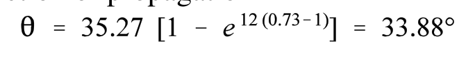 |
| 28 | II-7-28 | agreed | $$C = 5 . 1 5 7 \cos ( 3 3 . 8 8 ^ { \circ } ) = 4 . 2 8 \mathrm { m / s }$$ | 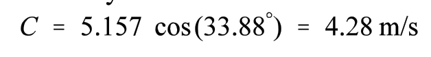 |
| 29 | II-7-29 | single_verified | $$C = \frac{gT}{2\pi} \tanh \frac{2\pi d}{CT}$$ | 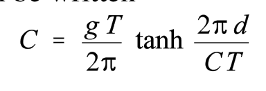 |
| 30 | II-7-24 | agreed | $$F = \sqrt{\frac{2D(1-D-S)^2}{1-(1-D-S)^2}}$$ | 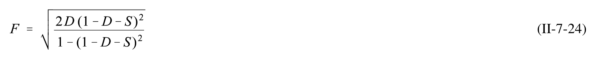 |
| 31 | II-7-31 | single_verified | $$F = \frac{V_S}{\sqrt{gd}} \qquad \qquad D = \frac{\Delta d}{d} \qquad \qquad S = \frac{A_n}{bd}$$ | 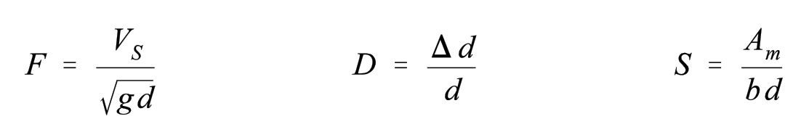 |
| 32 | II-7-32 | agreed | $$F = \frac{3.09}{\sqrt{9.81 \ (15)}} = 0.26$$ | 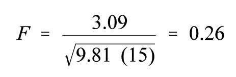 |
| 33 | II-7-33 | agreed | $$S = \frac{384}{137(15)} = 0.19$$ | 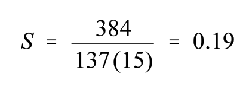 |
| 34 | II-7-34 | agreed | $$\Delta d = 15(0.02) = 0.30 \,\mathrm{m}$$ | 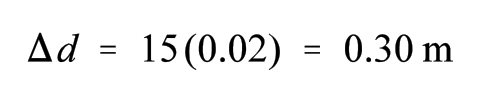 |
| 35 | II-7-35 | agreed | $$V_r = 3.09 \left[ \frac{137(15)}{137(15 - 0.3) - 384} - 1 \right] = 0.81 \text{ m/s}$$ | 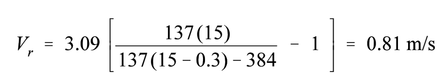 |
| 36 | II-7-25 | agreed | $$V _ { r } \ = \ V _ { s } \left[ \frac { b d } { b \left( d \ - \ \Delta d \right) \ - \ A _ { m } } \ - \ 1 \right]$$ | 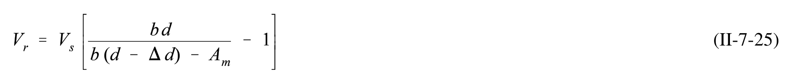 |
| 37 | II-7-26 | single_verified | $$T _ { n } \, = \, 2 \, \pi \, \sqrt { \frac { m _ { \nu } } { k _ { t o t } } }$$ | 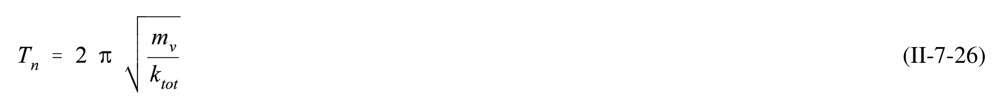 |
| 38 | II-7-27 | single_verified | $$m _ { \nu } = m \ + \ m _ { _ a } = \ 1 . 1 5 \: \mathrm { m }$$ | 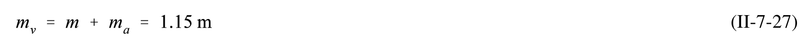 |
| 39 | II-7-28 | agreed | $$k_{tot} = \sum_{n} k_n \sin \theta_n \cos \phi_n$$ | 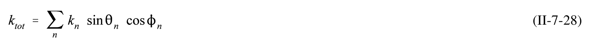 |
| 40 | II-7-29 | agreed | $$k_n = \frac{T_n}{\Delta l_n}$$ | 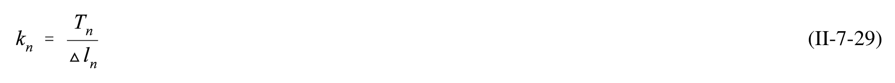 |
| 41 | II-7-30 | agreed | $$\varepsilon_n = 100 \left( \frac{\Delta l_n}{l_n} \right)$$ | 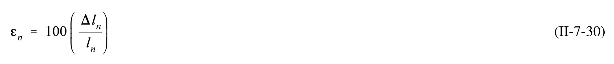 |
| 42 | II-7-31 | agreed | $$F_{w} = \frac{1}{2} \rho_{a} C_{D} A V_{10}^{2}$$ | 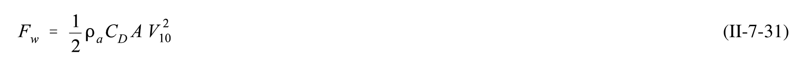 |
| 43 | II-7-43 | agreed | $$m _ { \nu } \ = \ 1 . 1 5 ( 5 5 , 8 6 0 , 2 0 0 ) \ = \ 6 4 , 2 3 9 , 2 0 0 \mathrm { k g }$$ | 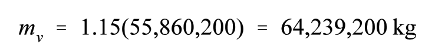 |
| 44 | II-7-44 | agreed | $$Load = 100 \left[ \frac{177,900}{526,000} \right] = 33.8\%$$ | 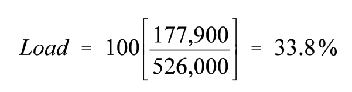 |
| 45 | II-7-45 | agreed | $$\Delta l_{Hd} = \Delta l_{St} = \frac{8.7(30.5)}{100} = 2.7 \text{ m}$$ | 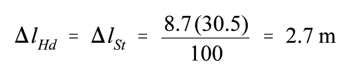 |
| 46 | II-7-46 | agreed | $$\Delta l_{Sp} = \frac{8.7(45.7)}{100} = 4.0 \text{ m}$$ | 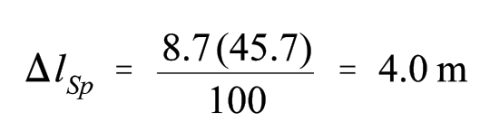 |
| 47 | II-7-47 | agreed | $$k_{Hd} = k_{St} = \frac{177,900}{2.7} = 65,900 \text{ N/m}$$ | 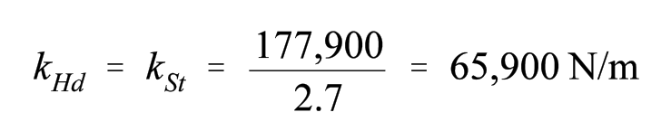 |
| 48 | II-7-48 | agreed | $$k _ { S p } = \frac { 1 7 7 , 9 0 0 } { 4 . 0 } = 4 4 , 5 0 0 \mathrm { N / m }$$ | 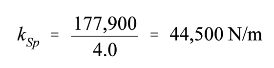 |
| 49 | II-7-49 | agreed | $$\Phi_{Hd} = \arcsin\left[\frac{7.0}{30.5}\right] = 13^{\circ}$$ | 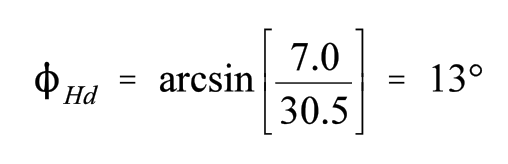 |
| 50 | II-7-50 | agreed | $$\phi_{St} = \arcsin\left[\frac{4.5}{30.5}\right] = 8^{\circ}$$ | 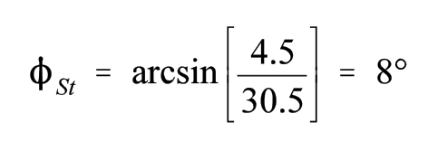 |
| 51 | II-7-51 | agreed | $$\phi_{Sp} = \arcsin\left[\frac{4.5}{45.7}\right] = 6^{\circ}$$ | |
| 52 | II-7-52 | agreed | $$k_{tot} = 2(65,900) \sin70^\circ \cos8^\circ + 44,500 \sin85^\circ \cos6^\circ = 122,600 + 44,100 = 166,700 \text{ N/m}$$ | |
| 53 | II-7-53 | agreed | $$k_{tot} = 2(65,900) \sin 70^\circ \cos 13^\circ + 44,500 \sin 85^\circ \cos 6^\circ = 120,700 + 44,100 = 164,800 \text{ N/m}$$ | |
| 54 | II-7-54 | agreed | $$k_{tot} = \frac{166,700 + 164,800}{2} = 165,750 \,\text{N/m}$$ | |
| 55 | II-7-55 | single_verified | $$T _ { s } \ = \ 2 ( 3 . 1 4 ) \sqrt { \frac { 6 4 , 2 3 9 , 2 0 0 } { 1 6 5 , 7 5 0 } } \ = \ 1 2 4 \mathrm { s e c }$$ | |
| 56 | II-7-32 | agreed | $$V_z = V_{10} \left(\frac{z}{10}\right)^{0.11}$$ | |
| 57 | II-7-57 | single_verified | $$A_{aft} = \frac{246}{2} 10.9 = 1,340 \,\mathrm{m}^2$$ | |
| 58 | II-7-58 | agreed | $$A_{forward} = 123[10.9 + 5(2.7)] = 3,000 \,\mathrm{m}^2$$ | |
| 59 | II-7-59 | agreed | $$A_{eff} = [1,340 + 3,000] \sin 30^{\circ} = 2,170 \,\mathrm{m}^2$$ | |
| 60 | II-7-60 | agreed | $$V _ { w } \, = \, 1 . 2 0 ( 1 0 . 3 1 ) \, = \, 1 2 . 4 \mathrm { m / s }$$ | |
| 61 | II-7-61 | agreed | $$F _ { w } \ = \ { \frac { 1 } { 2 } } ( 1 . 2 ) ( 1 . 0 ) ( 2 , 1 7 0 ) ( 1 2 . 4 ) ^ { 2 } \ = \ 2 0 0 \mathrm { k N }$$ | |
| 62 | II-7-33 | single_verified | $$F_{c,tot} = F_{c,fric} + F_{c,fric} + F_{c,prop}$$ | |
| 63 | II-7-34 | agreed | $$F_{c,form} = -\frac{1}{2} \rho_w C_{c,form} B T V_c^2 \cos \theta_c$$ | |
| 64 | II-7-35 | agreed | $$F_{c,fric} = -\frac{1}{2} \rho_w C_{c,fric} S V_c^2 \cos \theta_c$$ | |
| 65 | II-7-36 | agreed | $$C_{c,friction} = \frac{0.075}{(\log_{10} R_n - 2)^2}$$ | |
| 66 | II-7-37 | agreed | $$R_n = \frac{V_c L_{wl} \cos \theta_c}{v}$$ | |
| 67 | II-7-38 | agreed | $$S = \left( 1 . 7 T L _ { w l } \right) \mathrm { \, + \, } \frac { D } { T \gamma _ { w } }$$ | |
| 68 | II-7-39 | agreed | $$F_{c,prop} = -\frac{1}{2} \rho_w C_{c,prop} A_p V_c^2 \cos \theta_c$$ | |
| 69 | II-7-40 | agreed | $$A_{p} = \frac{L_{wl}B}{0.838 A_{r}}$$ | |
| 70 | II-7-70 | agreed_gt | $$\Delta = \nabla * \frac{\gamma_w lb / ft^3}{2240 lb / ton} = \frac{\nabla}{r}$$ | |
| 71 | II-7-71 | agreed | $$r = \frac{2240}{\gamma_w}$$ | |
| 72 | II-7-72 | agreed_gt | $$\nabla = L * B * T * C_B$$ | |
| 73 | II-7-73 | agreed_gt | $$S = 2 * L * T + \frac{\nabla}{T} = 2 * L * T + L * B * C_B$$ | |
| 74 | II-7-74 | agreed_gt | $$s = 1.7 * L * T + \frac{\nabla}{T} = 1.7 * L * T + L * B * C_B$$ |